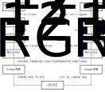

vc2_conformance.color_conversion: Color conversion routines¶
The vc2_conformance.color_conversion module implements color system
related functions relating to the color formats supported by VC-2.
The primary use for this module is to provide routines for converting between
colors specified by VC-2’s various supported color systems (see Annex (E.1) of
the VC-2 specification). This functionality is used during the generation of
certain encoder and decoder test cases (vc2_conformance.test_cases).
High-level API¶
This module implements simple color format conversion routines for converting between arbitrary VC-2 color formats via floating point CIE XYZ color. The process is implemented by the following high-level functions:
-
to_xyz(y, c1, c2, video_parameters)¶ Convert a picture from a native VC-2 integer Y C1 C2 format into floating point CIE XYZ format.
- Parameters
- y, c1, c2
numpy.array Three 2D
numpy.arrayscontaining integer Y C1 C2 values for a picture.- video_parameters
VideoParameters The VC-2 parameters describing the video format in use. The following fields are required:
color_diff_format_indexluma_offsetluma_excursioncolor_diff_offsetcolor_diff_excursioncolor_primariescolor_matrixtransfer_function
- y, c1, c2
- Returns
- yxz
numpy.array A 3D
numpy.arraywith dimensions(height, width, 3)containing floating point CIE XYZ values for a picture.
- yxz
-
from_xyz(xyz, video_parameters)¶ Convert a picture from CIE XYZ format into a native VC-2 integer, chroma subsampled Y C1 C2 format.
- Parameters
- yxz
numpy.array A 3D
numpy.arraywith dimensions(height, width, 3)containing floating point CIE XYZ values for a picture.- video_parameters
VideoParameters The VC-2 parameters describing the video format to produce. The following fields are required:
color_diff_format_indexluma_offsetluma_excursioncolor_diff_offsetcolor_diff_excursioncolor_primariescolor_matrixtransfer_function
- yxz
- Returns
- y, c1, c2
numpy.array A set of three 2D
numpy.arraycontaining integer Y C1 C2 values for a picture. If chroma subsampling is used, the C1 and C2 arrays may differ in size from the Y component.
- y, c1, c2
Warning
Color format conversion is an extremely complex problem. The approach used by this module is simplistic in both its approach and implementation. While it will always produce plausible colors, it may not produce the best possible result. To give a few examples of limitations of this module:
Potential numerical stability issues are ignored (e.g. YCgCo conversions may be lossy)
No white point correction is applied
Out-of-gamut colors are crudely clipped
Poor quality antialiasing filters for chroma subsampling/interpolation
Finally, this module should be considered a ‘best effort’ at a correct implementation and the resulting color conversion should largely be treated as informative.
Warning
Support to_xyz() is limited to only formats using the
tv_gamma transfer
function. All formats are supported, however, by from_xyz().
Low-level API¶
The conversion processes used by to_xyz() and from_xyz() is
built on a series of lower-level transformations as described by the figure
below. These lower-level primitives may be used directly to perform more
specialised conversions.

These steps build on the following conversion functions and matrices. These are implemented based on the specifications cited by the VC-2 specification.
-
float_to_int_clipped(a, offset, excursion)¶ Convert (an array of) float sample values in the nominal range 0 to +1 or -0.5 to +0.5 to integers (with the specified offset and excursion).
Values which fall outside the range of the integer representation are clipped.
-
float_to_int(a, offset, excursion)¶ Convert (an array of) float sample values in the nominal range 0 to +1 or -0.5 to +0.5 to integers (with the specified offset and excursion).
Values which fall outside the range of the integer representation are not clipped. See
float_to_int_clipped().
-
int_to_float(a, offset, excursion)¶ Convert (an array of) integer sample values from integers (with the specified offset and excursion) to floating point values nominally in the range 0 to +1 or -0.5 to +0.5.
-
from_444(chroma, subsampling)¶ Subsample a chroma picture component into the specified
ColorDifferenceSamplingFormats.Warning
This function uses an extremely crude low-pass filter during downsampling which is likely to produce aliasing artefacts. As such, pictures produced by this function should not be used for anything where high fidelity is required.
-
to_444(chroma, subsampling)¶ Given a chroma picture subsampled according to the specified
ColorDifferenceSamplingFormats, return an upsampled chroma signal.Warning
This function uses an extremely crude anti-aliasing filter during upsampling which is likely to produce artefacts. As such, pictures produced by this function should not be used for anything where high fidelity is required.
-
COLOR_MATRICES= {<color matrix index>: <3x3 matrix>, ...}¶ For each color matrix supported by VC-2, a \(3 \times 3\) matrix which transforms from non-linear RGB (\(E_R E_G E_B\)) to Y C1 C2.
-
INVERSE_COLOR_MATRICES= {<color matrix index>: <3x3 matrix>, ...}¶ For each color matrix supported by VC-2, a \(3 \times 3\) matrix which transforms from Y C1 C2 to non-linear RGB (\(E_R E_G E_B\)).
-
TRANSFER_FUNCTIONS= {<transfer function index>: <function>, ...}¶ For each set of VC-2’s, supported transfer functions, a Numpy implementation of that function. These functions implement the transform from linear to non-linear RGB, \(E_R E_G E_B\). These functions expect and returns a single value or Numpy array of values.
-
INVERSE_TRANSFER_FUNCTIONS= {<transfer function index>: <function>, ...}¶ For (a subset of) VC-2’s, supported transfer functions, a Numpy implementation of the inverse function. These functions implement the transform from non-linear to linear RGB. These functions expect and returns a single value or Numpy array of values.
Warning
An inverse transfer function is currently only provided for
tv_gammabecause this is all that was required at the time of development.
-
XYZ_TO_LINEAR_RGB= {<color primaries index>: <3x3 matrix>, ...}¶ For each set of color primaries in
PresetColorPrimaries, a \(3 \times 3\) matrix which converts from CIE XYZ into linear RGB.
-
LINEAR_RGB_TO_XYZ= {<color primaries index>: <3x3 matrix>, ...}¶ For each set of color primaries in
PresetColorPrimaries, a \(3 \times 3\) matrix which converts from linear RGB into CIE XYZ.
Additional utility functions¶
The following additional utility functions are provided for the manual evaluation of certain transform steps.
-
matmul_colors(matrix, array)¶ Given a (height, width, 3) 3D array, return a new 3D array where each triple in the first array has been multiplied by the specified \(3 \times 3\) matrix.
-
swap_primaries(xyz, video_parameters_before, video_parameters_after)¶ Given an image defined in terms of one set of primaries, return a new image defined in terms of a different set of primaries but with the same numerical R, G and B values under the new set of primaries.
This transformation is useful when an image is defined not by absolute colors but rather colors relative to whatever primaries are in use. For example, a test pattern designed to show swatches of pure color primaries may be given relative to a particular set of primaries but needs to be adapted for use with another set of primaries.
- Parameters
- xyz\(3 \times 3\) array (height, width, 3)
- video_parameters_before
VideoParameters - video_parameters_after
VideoParameters
- Returns
- xyz\(3 \times 3\) array (height, width, 3)
Color parameter sanity checking¶
The sanity_check_video_parameters() function is provided which can
check a given VC-2 video format is ‘sane’ – that is it might plausibly be able
to represent some colors.
-
sanity_check_video_parameters(video_parameters)¶ Given a set of
VideoParameters, check that a set of video parameters could plausibly be used to encode a color signal (regardless of whether the color specification itself is sensible).Specifically, the following checks are carried out:
Are the luma and color difference signals at least 8 bits?
Can white, black and saturated primary red, green and blue be encoded?
- When the RGB color matrix is used:
Is the color difference sampling mode 4:4:4?
Are the luma and chroma components the same depth?
Returns a
ColorParametersSanityas a result.
-
class
ColorParametersSanity(luma_depth_sane=True, color_diff_depth_sane=True, black_sane=True, white_sane=True, red_sane=True, green_sane=True, blue_sane=True, color_diff_format_sane=True, luma_vs_color_diff_depths_sane=True)¶ Result of
sanity_check_video_parameters(). Indicates the sanity (or insanity) of a set of video parameters.Truthy if sane, falsey otherwise.
Use the various properties to determine what is and is not sane.
Use the
explain()function to return a string with a human readable explanation.-
property
luma_depth_sane¶ True iff the luma component has been assigned at least 8 bits.
-
property
color_diff_depth_sane¶ True iff the color difference components have been assigned at least 8 bits.
-
property
black_sane¶ If True, the format can represent (video) black.
-
property
white_sane¶ If True, the format can represent (video) white.
-
property
red_sane¶ If True, the format can represent (video) primary red.
-
property
green_sane¶ If True, the format can represent (video) primary green.
-
property
blue_sane¶ If True, the format can represent (video) primary blue.
-
property
color_diff_format_sane¶ True iff the color difference sampling format is appropriate for the color format.
False when non-4:4:4 sampling is used for RGB formats.
-
property
luma_vs_color_diff_depths_sane¶ True iff the relative offsets/excursions of luma and color difference components are appropriately matched.
False when not identical for RGB formats.
-
explain()¶ Return a human-readable explanation of why a video format is not sane (or simply state that it is sane, if it is).
-
property